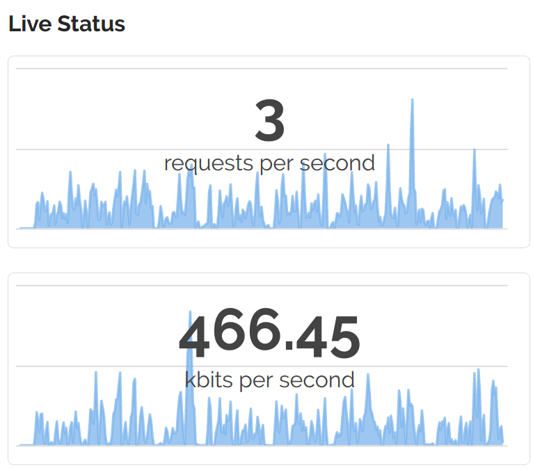

Origin pull CDNs are nothing new. But Beluga CDN is a new CDN.
We’ve used a push CDN system for OSMC for years to deliver downloads and updates to our users. But until recently, the OSMC website, forum and other assets were being served directly from our web servers.
In September 2016, I saw an advert for Beluga CDN. They offered 100GB of free bandwidth for life, so I thought I’d try it out.
After creating an account I reached out to them and they were kind enough to offer some advice, as well as sponsor OSMC with enough bandwidth for us to give them a real go.
I was interested in trying out an origin pull CDN as I hadn’t used one before. I wanted to learn more about the requirements of managing an origin-pull CDN properly: including Varnish configuration and how to integrate it in to our existing deployment system.
There were also a couple of advantages I was looking forward to:
Getting started was simple enough. You enter your origin URL and that’s it. You’ll get a subdomain which you can configure as a CNAME record.
After a couple of weeks, we ran in to a couple of issues
with some users experiencing problems, but providing Beluga with wget --server-response was enough for
them to identify a faulty server and resolve the issue promptly. Since then, things have been working
smoothly.
The Beluga web interface gives you some insights in to metrics and traffic usage. This lets you budget and plan accordingly.

Recently, I moved all of our SSL certificates to Let’s Encrypt. These certificates have a very short lifespan (90 days); which means that they do need to be updated regularly.
For generation and renewal of SSL certificates, we use LEGO, a Let’s Encrypt ACME client written in Go.
We use the DNS based challenge as it allows any server to generate a certificate for a given domain. This is better than the response challenge for HTTP, as some of our services are running in containers or on different hosts altogether. When Let’s Encrypt supports wildcard certificates in 2018, this will be greatly simplified.
Once we have a certificate and key, we can pipe these in to Beluga via their API.
Beluga have a good API with a good Python package to leverage this. I initally found an issue where a Python package was depended on without a check to see whether this existed but Beluga accepted a PR to remedy this quickly.
Once the Let’s Encrypt certificate has been retreived, and we have the Beluga Python package installed, we need to process the certificate and push it to Beluga.
To process the certificate, we run:
openssl -x509 -in /path/to/certificate/domain.crt > /tmp/cert_file
cp /path/to/certificate/domain.key /tmp/key_file
python push_to_beluga.py "domain_name.com"
And in our push_to_beluga.py file, we have:
#!/usr/bin/env python2
import json, subprocess, sys
domain = sys.argv[1]
user="account@email.com"
password="password"
beluga_cmd1 = ['beluga', '--username', user, '--password', password, '--path', 'ssl-certificates']
output = subprocess.check_output(beluga_cmd1)
joutput = json.loads(output)
for cert in joutput['certificates']:
if domain in cert['names']:
cert_id = cert['id']
break
with open("/tmp/cert_file") as fp:
cert = fp.read()
with open("/tmp/key_file") as fp:
key = fp.read()
body = json.dumps({'certificate' : cert, 'id': cert_id, 'key': key})
print body
beluga_cmd2 = ['beluga', '--username', user, '--password', password, '--method', 'PUT',
'--path', 'ssl-certificates', '--body', body]
output = subprocess.check_output(beluga_cmd2)
print output
This process is automated as a cronjob for us, but it’s nice to keep an eye on it and know when it’s succeeded.
Here’s a simple bash script to add progress, which you can call after a successful certificate update. You’ll need to configure Slackbot under Custom Integrations first, and get the Hook URL.
DOMAIN="$1"
SLACK_URL="https://hooks.slack.com/services/PATH-TO-SERVICE"
curl -X POST --data-urlencode 'payload={"channel": "#general", "username": "Job information", "text": "", "icon_emoji": ":osmc:",
"attachments": [
{
"fallback": "",
"color": "#36a64f",
"pretext": "Renewed SSL certificate successfully",
"fields": [
{
"title": "Domain",
"value": "'"${DOMAIN}"'",
"short": true
}
],
"footer": "Certificate renewal",
"footer_icon": "https://yourdomain.com/favicon.ico"
}
]
}' $SLACK_URL
Now, with an origin-pull CDN for web, and an origin-push CDN for OSMC updates, we’re very close to just serving text from our web servers. That means less bandwidth use for our web host (who are very generous), and the ability to handle more traffic in the future.
I would recommend Beluga CDN for its very proactive support and for their offer to help our open source project alone. After testing the CDN extensively over the last few months we’ve found it to be very fast and reliable.
Written by Sam Nazarko, a 20s London chap who is an open source developer by night. Follow me on Twitter